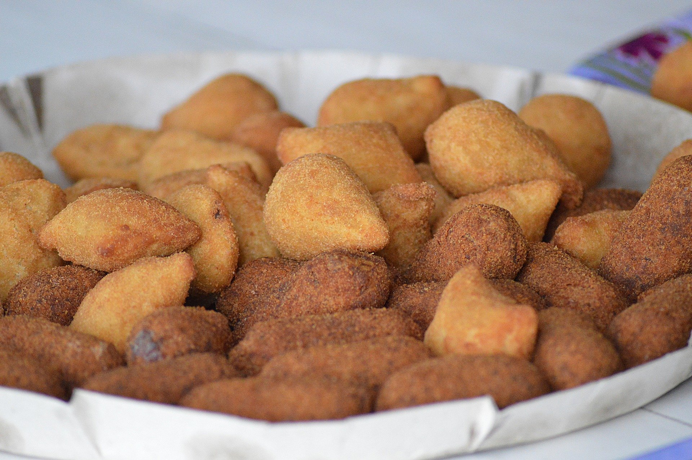

Os melhores salgados da região de São José dos Campos, tudo feito com o maior amor e dedicação que só uma mineira raiz sabe fazer, você pode já ter comido quase tudo que o nosso Brasil tem a oferecer mais nas mãos desse Tia, você irá sentir outros sabores.

Comidas e salgados para festas e eventos de todas as ocasiões, dês de um aniversário da sua pequena criança ou seu amor até um jantar para os funcionários da sua empresa ou quem sabe um belo café da manhã. Formal ou descontraído, estaremos sempre enchendo seus pratos.
- Salgados
- Coxinha de frango
- Bolinha de queijo
- Quibe
- Enroladinho de salsicha
- Pastel de carne
- Rissole de presunto e queijo
- Bolinha de batata recheada
- Croquete de carne

- Massas
- Pastel de frango em massa folhada
- Sanduíches em geral
- Canudinho com atum
- Mini pizza de polenta
- Esfirra
- Empada
- Enrolado de presunto com queijo
- Bolinho de mandioca
Vamos logo começar os preparativos para seus maiores e melhores eventos, tudo preparados pelas nossas mãos, ligue para nós mande um e-mail, nós conte seus desejos de um dia inesquecível e deixe que cuidamos da cozinha para você.